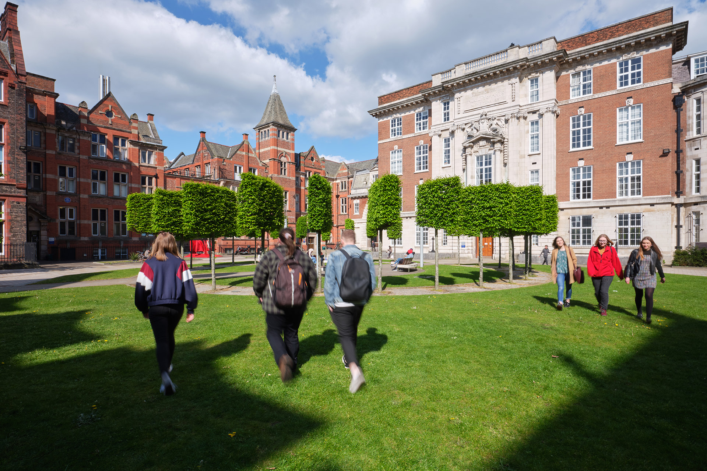
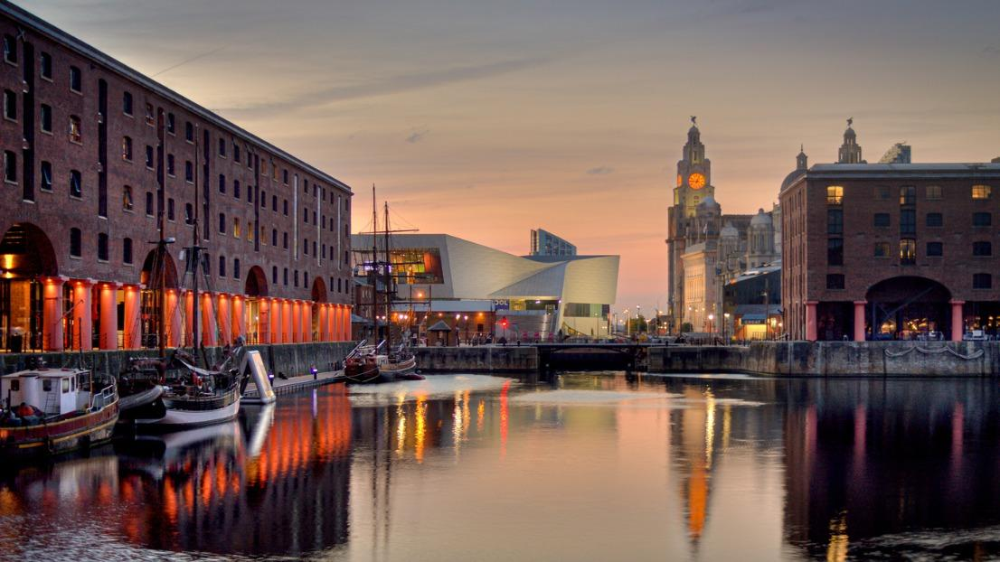

The University of Liverpool is a renowned research university located in Liverpool, England. Founded in 1881, it is a member of the prestigious Russell Group of leading UK research universities. The university has a strong reputation for research in a range of fields including health and life sciences, computer science, and engineering. It is also known for its strong business and law schools. The university has a diverse student body with over 23,000 students from over 100 countries. It offers a range of undergraduate and postgraduate degree programs as well as research opportunities. The campus is located in the heart of Liverpool, a vibrant and culturally rich city with a rich history and a thriving music and arts scene.